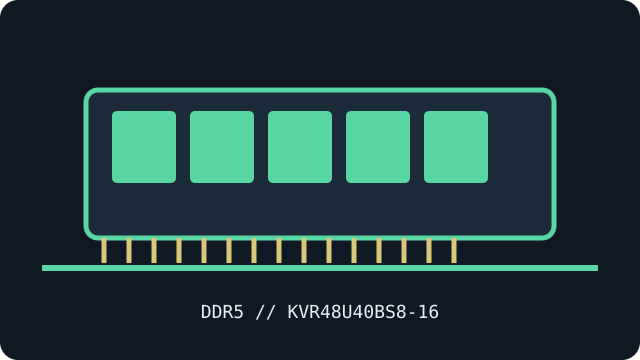

[ MANUFACTURER MODEL // MEMORY / RAM ]
Kingston ValueRAM KVR48U40BS8-16
A manufacturer-specific DDR5 desktop module identified by part number KVR48U40BS8-16. This record distinguishes the exact model from generation-wide standards; the physical label and SPD are decisive for a particular revision.

EXACT ID: Kingston ValueRAM KVR48U40BS8-16. Capacity is stated per module; verify the label, full suffix, SPD and revision before service or compatibility decisions.
Model specifications
| Manufacturer / exact part number | Kingston KVR48U40BS8-16 |
|---|---|
| Module / ECC class | Single-module 288-pin desktop DDR5 UDIMM; unbuffered, non-ECC |
| Capacity and data rate | 16 GB module (1 × 16 GB); DDR5-4800 (PC5-38400) |
| Rated primary timing | CL40-39-39 (JEDEC) |
| Operating voltage | 1.10 V nominal |
| Rank / organization | 1Rx8 per Kingston datasheet |
| XMP / EXPO | JEDEC SPD; no XMP or EXPO profile listed for this SKU |
| Compatibility | Single 288-pin DDR5 desktop UDIMM for a host supporting a 16 GB module at up to 4800 MT/s. Verify motherboard QVL, CPU memory-controller support, BIOS and slot population. Unbuffered, non-ECC system memory; DDR5 on-die ECC is not system ECC. |
Compatibility, service & archive notes
- Single 288-pin DDR5 desktop UDIMM for a host supporting a 16 GB module at up to 4800 MT/s. Verify motherboard QVL, CPU memory-controller support, BIOS and slot population. Unbuffered, non-ECC system memory; DDR5 on-die ECC is not system ECC.
- Check motherboard QVL and service manual, CPU memory-controller generation, BIOS, DIMM density, slot population and supported ranks before installation. A host may select a lower SPD rate.
- This is a DDR5 desktop UDIMM, not a SO-DIMM, RDIMM or LRDIMM. DDR generations and buffering classes are not interchangeable.
- DDR5 on-die ECC is internal correction, not system-level ECC reporting. This module is non-ECC; system ECC requires a compatible ECC module, CPU, motherboard and firmware.
- Power down, use ESD controls, handle by the edges and never force a keyed DIMM. Retain a label photograph and read-only SPD dump with the host, BIOS, slot and test results.
Manufacturer & standards references
- Kingston exact KVR48U40BS8-16 datasheetManufacturer primary source for this exact part number and published module specifications.
- Kingston part compatibility lookup for KVR48U40BS8-16Second manufacturer source for checking the module identity and system compatibility context.
- JEDEC JESD79-5 — DDR5 SDRAMDDR5 interface and generation context, not a platform compatibility guarantee.
Manufacturer specifications may vary by revision; check the precise label and SPD against the platform QVL.